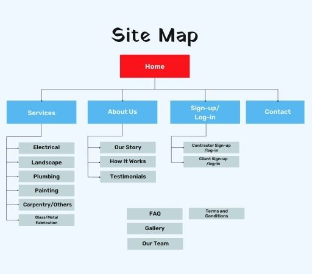
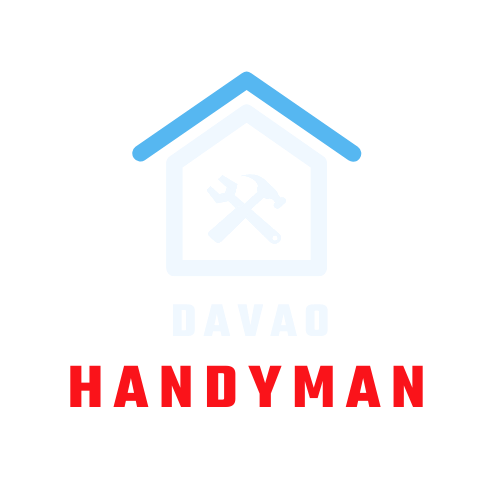
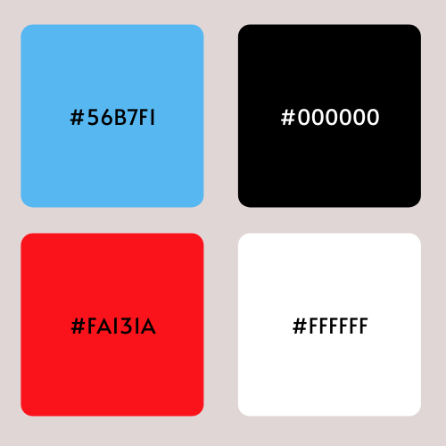

Main Navigation
- Home
- Services
- How It Works
- Sign-up/Log-in
- Contact
Site Map
Site Name
Davao Handyman
Site Purpose and Goals
The Purpose and Goals of this site are the following:
- To provide clients and contractors a venue to provide service/be serviced in their home improvement and repair needs.
- Increase brand awareness
Target Audience
- Age: 25-50 years old
- Gender: Male and Female
- Marital Status: Married
- Key Psychographics: family-oriented, busy, career men/women
Logo
Color Scheme
Typography
Yatra One for headings
Rubik for paragraphs and lists
Content
Our Story
This company was established on February 27, 2022. It was born out of our personal necessity when it comes to home improvement or repairs. We noticed how difficult it is for us to find contractors here in Davao City, Philippines, who can
service our carpentry, plumbing and other home repair needs. There were existing social media groups of these service providers but it's hard to trust when there is no one vouching for their expertise and realibility in delivering
results.
We created this company to connect clients with local expert/pros in different home repairs, improvements and other home service needs. To help clients get quality service we register only those contractors which we have carefully
screened and proven highly capable of quality workmanship, so you may rest assured that your money will not go to waste.
We hope that we may be able to help you find the experts/pros you need for your home repair and improvement needs and get the best value service out of your budget.
God bless!
How It Works
- Tell us about your home repair/improvement needs.
- In a few seconds, see a list of local pros.
- Compare quotes and choose the best pro for the job.